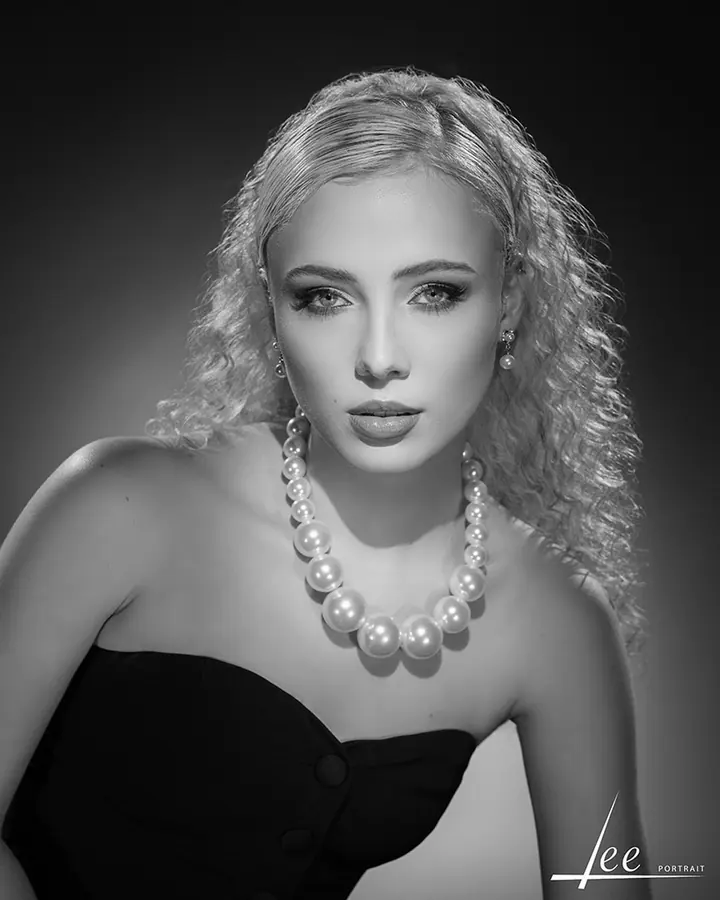
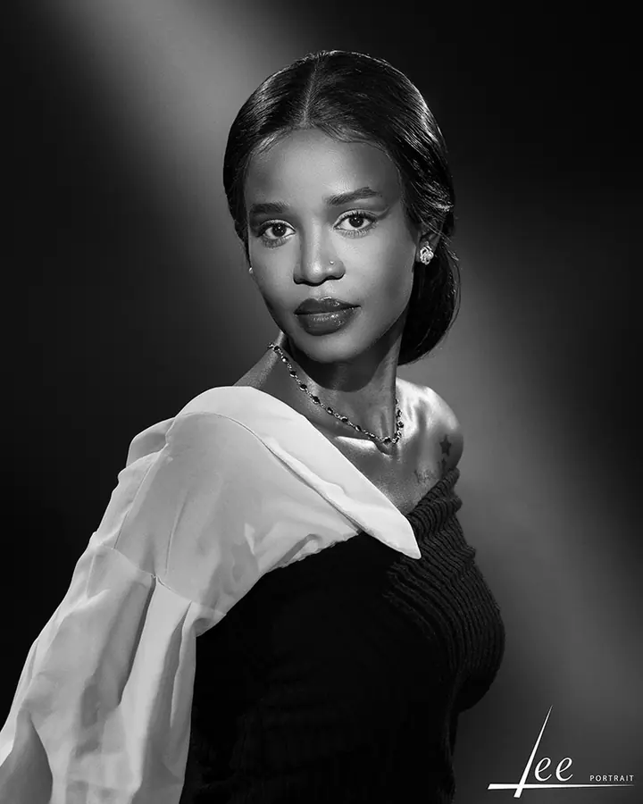

Prestižní portréty
Výjimečný portrétní zážitek pro jednotlivce, páry i celé rodiny. Výsledkem jsou portréty nadčasové, elegantní a nezaměnitelné, v našem černobílém rukopisu.

Portrétní ateliér
Jsme Portrait Studio Lee, portrétní ateliér v historickém centru Olomouce. Fotíme hlavně černobíle a světlem tvarujeme tvář tak, aby portrét obstál i za mnoho let. Přijďte sami, v páru, s rodinou, nebo i se svým psem.
Zeptat se na termín
Výjimečný portrétní zážitek pro jednotlivce, páry i celé rodiny. Výsledkem jsou portréty nadčasové, elegantní a nezaměnitelné, v našem černobílém rukopisu.
Portréty pro vaši profesní prezentaci. I tady pracujeme se světlem precizně a s důrazem na jedinečnost každého klienta.
Noblesní fotografie vašich zvířecích společníků v ateliéru. Stejné světlo a stejná péče jako u lidských portrétů.
Portrait Studio Lee najdete na Palachově náměstí v historickém centru Olomouce. Je to prostor vytvořený pro výjimečný portrét, kde vládne světlo, preciznost a klid. Pracujeme pod záštitou titulu Qualified European Photographer.
Náš rukopis je černobílý. Portrét pro nás vyjadřuje kultivovanou estetiku a světlo má tvář jemně modelovat, ne jen osvětlit. Fotíme prestižní portréty, instantní sezení, business portréty, portréty v pohybu, vánoční portréty i noblesní fotografie zvířat. Každou zakázku zpracováváme s důrazem na preciznost, estetiku a jedinečnost klienta.
Ve studiu máme i Beauty Studio, kde vás před focením připravíme líčením, účesem a stylingem, a privátní Lee Café. Vedeme také workshopy pro fotografy a vizážistky, kteří chtějí pochopit světlo a najít vlastní rukopis.
Napište nám na info@lee.studio nebo zavolejte. Společně vybereme typ sezení, který vám sedí: individuální, v páru, rodinný, business, nebo portrét vašeho zvířete.
Pokud chcete, připravíme vás přímo u nás. Líčení, účes i styling děláme s důrazem na eleganci, klid a proporci.
V klidném prostředí studia pracujeme se světlem, které tvaruje tvář. Na nic nespěcháme, máte čas se uvolnit.
Každý portrét zpracováváme s důrazem na preciznost a estetiku, aby měl trvalou hodnotu.
Jsme na Palachově náměstí 620/1 v historickém centru Olomouce. Otevřeno máme od pondělí do soboty, od 10:00 do 18:00.
Ano. Portréty fotíme individuálně, v páru i jako rodinné sezení.
Ano. Naše Beauty Studio nabízí líčení, účes i styling, a to nejen pro focení, ale i pro chvíle, kdy chcete být připraveni bez kompromisů.
Pro fotografy, kteří chtějí tvořit víc než jen pěkný obraz, pro vizážistky, které chtějí pochopit světlo, a pro každého, kdo v sobě cítí vášeň pro krásu. Probíhají v komorním prostředí našeho studia.